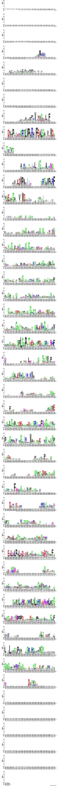

S27#
Avtor: Nina Cankar
Datum izdelave: 2024-05-17
Koda seminarja: S27
Vhodni podatek#
Povezava do datoteke z vhodnim podatkom: S27
Rezultati analiz#
###Ime in izvorni organizem ime: hipotetični protein ASZ90_018512, predlagano ime copper amine oxidase-like N-terminal domain-containing protein
izvor: hydrocarbon metagenomes (ekološki metagenomi)

Del podanega plazmida, ki ni že v osnovi del vektorja pUC57, zapisuje za hipotetični protein ASZ90_018512, ki ga pod tem imenom najdemo v zbirkah Genbank(pod kodo KUG04066.1) in Uniprot (pod kodo A0A0W8E627). Zapis ni pridobljen iz določenega organizma, ampak z analizo ekoloških metagenomov.
Na podlagi poravnav z drugimi proteini v zbirki non-redundant protein sequences z orodjem BLAST sem sklepala, da gre za bakterijski protein, ni pa mi uspelo enoznačno določiti izvornega organizma. Precej verjetno je, da gre za bakterijo iz razreda Clostridia, saj je protein z najvišjim ujemanjem (69,09 %) Copper amine oxidase N-terminal domain-containing protein iz bakterije Desulfofarcimen acetoxidans, med rezultati pa najdemo tudi več drugih hipotetičnih proteinov iz sorodnih bakterij. Lahko pa bi protein pripadal tudi bakteriji iz rodu Deltaproteobacteria ali Oligoflexia, saj je pri teh proteinih kljub nižjemu ujemanju E vrednost primerno nižja.


###Velikost proteina dolžina: 662
Tako iz zapisa v zbirki Genbank kot Uniprot je razvidno, da je protein sestavljen iz 662 aminokislinskih ostankov.
###Lokalizacija in topologija Z orodjem blastp nisem našla anotiranih proteinov s signifikantno podobnostjo glede na delež ujemanja, query cover in E vrednost. Pri iskanju sem pri podatkovnih zbirkah izbrala swissprot, saj ta vsebuje le anotirane proteine. Na podlagi rezultatov nisem uspela sklepati na lokacijo proteina v celici.

###Domenska zgradba S pomočjo anotacij v zbirkah Genbank in Uniprot sem identificirala naslednje domene:
Copper amine oxidase-like N-terminal domain (ak 46 - 138, anotirana v Uniprot in Genbank),
uncharacterized conserved protein (ak 150 - 216, anotirana v Genbank),
LGFP repeat-containing protein (ak 238 - 439, anotirana v Genbank),
peptidaza C1 (ak 458 - 660, anotirana v Genbank).
Nato sem si protein ogledala še v Interpro, kjer sta označeni tudi domeni MORN4 repeat containing protein 4 (ak 154-227) in papainu podobna cisteinska peptidaza (ak 458-660), kar ustreza peptidazi C1.

###Postranslacijske modifikacije Z orodjem blastp nisem našla anotiranih proteinov s signifikantno podobnostjo glede na delež ujemanja, query cover in E vrednost. Pri iskanju sem pri podatkovnih zbirkah izbrala swissprot, saj ta vsebuje le anotirane proteine. Na podlagi rezultatov nisem uspela sklepati na morebitne posttranslacijske modifikacije proteina.
###Funkcija proteina in substrat Glede na anotirane domene je protein papainska peptidaza, ki spada med cisteinske peptidaze. Ker dodatnih podatkov ni, gre lahko za endo- ali eksopeptidazo, prav tako specifičen substrat ni znan. V zbirki Genbank je anotirano aktivno mesto, kot lahko vidimo na spodnji sliki pod razdelkom Site, in sicer gre za aminokisline 465, 472, 609 in 632.

###Sorodni proteini in filogenetsko drevo Pri iskanju z aminokislinskim zaporedjem po zbirki non-redundant protein sequences z orodjem blastp sem našla same bakterijske proteine, od tega veliko večino hipotetičnih proteinov. Preostali vsebujejo bakrovo aminooksidazno ali tej podobno N-končno domeno. Med prvimi sto zadetki ni bilo anotiranih ali evkariontskih proteinov. Na podlagi prvih 50 rezultatov (glede na čim nižjo E vrednost) sem z orodjem Clustal Omega izdelala poravnavo celotnih zaporedij in podatke za vizualizacijo filogenetskega drevesa kopirala v orodje phylo.io za lažjo vizualizacijo.
Zaporedja, uporabljena pri poravnavi
Rezultat poravnave z orodjem Clustal Omega
Glede na filogenetsko drevo je protein ASZ90_018512 najbolj soroden hipotetičnemu proteinu iz bakterije Clostridia bacterium, kar potrjuje eno od začetnih hipotez za izvorni organizem proteina. Enako evolucijsko oddaljeni so tudi hipotetični proteini iz vrst Acetivibrio cellulolyticus, Sporotomaculum syntrophicum in Paenibacillus sp.
###Ohranjenenost regij Sorodni proteini v filogenetskem drevesu niso peptidaze, saj je sorodna predvsem N-končna domena, zato ni mogoče povezati funkcije proteina z ohranjenostjo aminokislinskih ostankov v aktivnem mestu.
Poravnava Clustal Omega, uporabljena za weblogo

Vizualizacija poravnave (orodje Clustal Omega) z weblogo ne da posebnih rezultatov - vidimo lahko ohranjenost aminokislinskih ostankov, vendar ne v aktivnem mestu.
###Podobni evkariontski in prokariontski proteini Z iskanjem po blastp s filtrom Eukaryotae pri organizmih nisem našla evkariontskih proteinov s signifikantno podobnostjo. Največje ujemanje ima hipotetični protein ASZ90_018512 s hipotetičnim proteinom EHS25_002249 iz kvasovke Saitozyma podzolica, a to nima signifikantnega pomena (gre za 50% ujemanje z le 30% query cover in visoko E vrednostjo).

Podobni prokariontski proteini so bakterijski hipotetični proteini iz razreda Clostridia (WP_015759085.1) ter rodov Deltaproteobacteria (MBI2603751.1) in Oligoflexia (MBF0360560.1), kar lahko vidimo že iz iskanj po blastp, iz katerih sem sklepala na potencialni izvorni organizem.
###Povezava funkcije z drugimi proteini in interakcije Hipotetični protein ASZ90_018512 je peptidaza, vendar njeni substrati niso znani. Zaradi pomanjkanja anotacij pri tem in sorodnih proteinih nisem mogla sklepati na morebitne interakcije z drugimi proteini. Sklepamo lahko edino, da kot cisteinska peptidaza cepi oziroma razgrajuje zaenkrat še neznane proteinske substrate.
###Model strukture Z orodjem AlphaFold3 sem izdelala model strukture proteina ter ga vizualizirala v ChimeriX. Na spodnjih slikah je prikazana le ena od možnih konformacij proteina (ena od petih cif datotek, ki so rezultat predikcije strukture z orodjem AlphaFold).
Zgornja slika prikazuje eno od predpostavljenih struktur hipotetičnega proteina, pobarvano glede na potek polipeptidne verige. Na drugi sliki pa je ista struktura pobarvana po B faktorju, ki v predvidenih strukturah v resnici predstavlja pLDDT. Tako lahko vidimo zanesljivost napovedi strukture v posameznih delih proteina. Ta je v glavnem precej nizka, saj niso znani zelo podobni ali sorodni proteini z eksperimentalno določeno strukturo.